Without Equipment
-
Hammer Curls
Hammer curls target the long head of the bicep as well as the brachialis (another muscle in the upper arm) and the brachioradialis (one of the key forearm muscles). The hammer curl is a relatively simple exercise that beginners can quickly master.

-
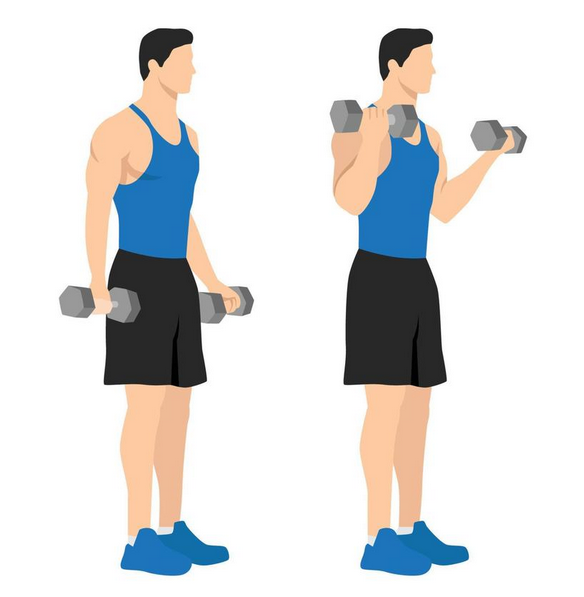
Dumbbell Curls
Curls work the biceps muscles at the front of the upper arm and the muscles of the lower arm—the brachialis and brachioradialis
-
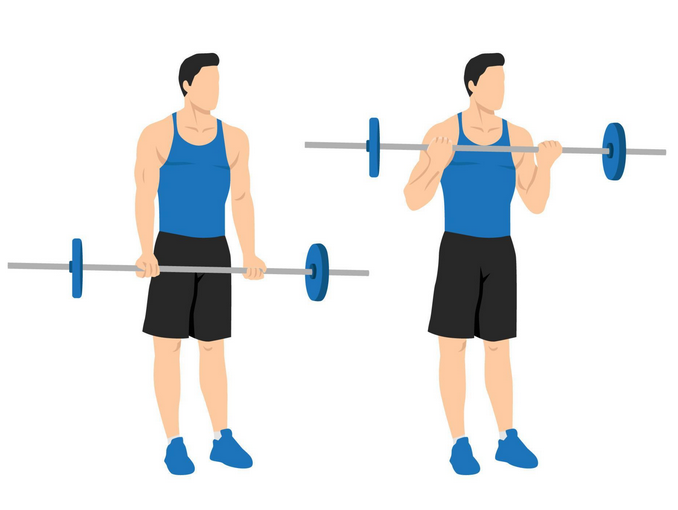
Barbell Bicep Curl
Barbell Curls are an effective way to achieve muscle growth and stronger biceps. This isolation exercise can help to improve grip strength, especially if you are using a thicker grip barbell. For example, if you are using thick grips around the handle of the barbell, this places a greater demand on your grip strength.
-
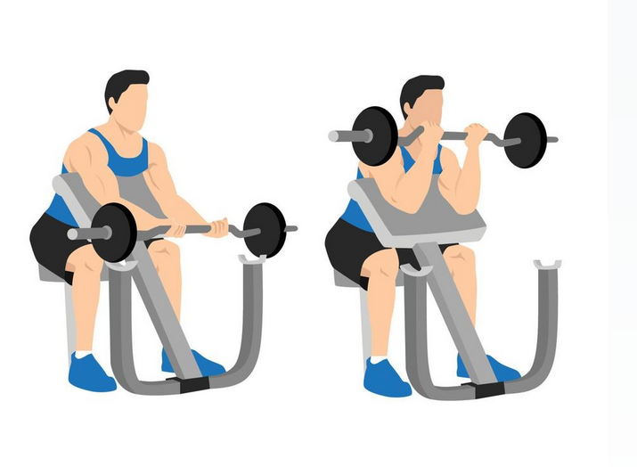
Inline Bicep Curl
Because the incline curl targets the biceps brachii – the muscle that is most 'visible' – more than any other muscle, this is the variation we would recommend if you are after a big bicep aesthetic.
-
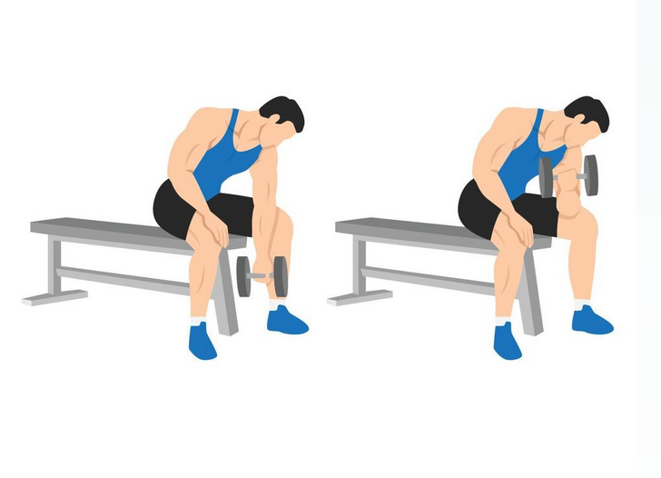
Concentration Curl
Concentration curls are a unilateral curl variation which challenge the biceps in a seated position with the working elbow supported by the thigh. This keeps the bicep stable and prevents other areas of the body supporting the lift, which places greater tension on the bicep.
-
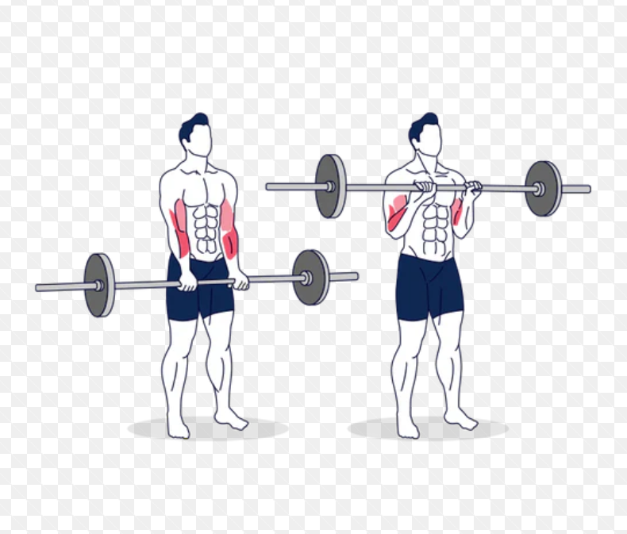
Reverse Curl Straight Bar
The reverse curl attacks your brachioradialis muscles. Unlike traditional curls, in which your biceps shoulder the brunt of the work, reverse curls attack your brachioradialis, the muscle on the front of your forearm. By using a reverse grip, the biceps are less taxed and more focus is on the brachioradialis.
-
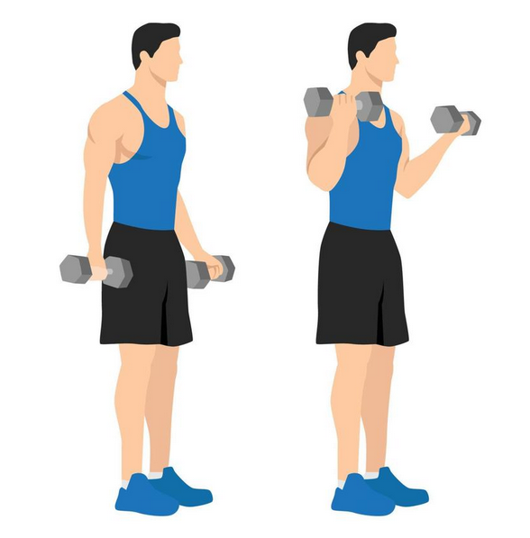
Twisting Dumbbell Curl
Twist curls primarily target your bicep brachii. This muscle consists of two heads, a long and a short one. Both work together during the pulling and lifting motions.
With Equipment
-
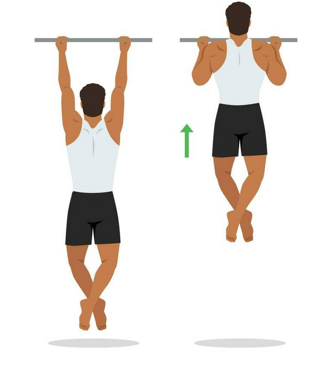
Chin Ups
The primary benefits of the chin-up are increasing strength and definition of the upper arms, specifically the biceps, the posterior deltoids of the shoulders and the teres major and latissimus dorsi muscles of the back.
-
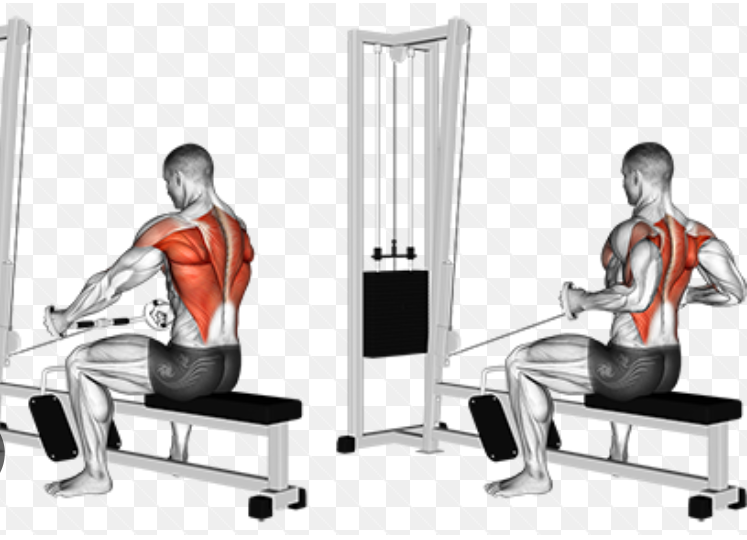
Underhand Seated Row
Seated underhand-grip cable row is a exercise machine exercise that primarily targets the middle back and to a lesser degree also targets the biceps, lats, lower back and shoulders. The only seated underhand-grip cable row equipment that you really need is the following: cable machine.
-
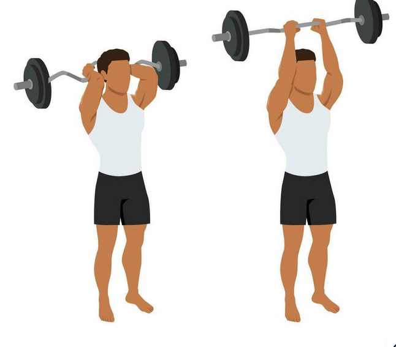
Standing Overhead Barbell Triceps Extension
If you want to build bigger triceps, overhead extensions are better than pushdowns, small study finds. Overhead extensions may be a better exercise for building arm muscle than triceps pushdowns.
-
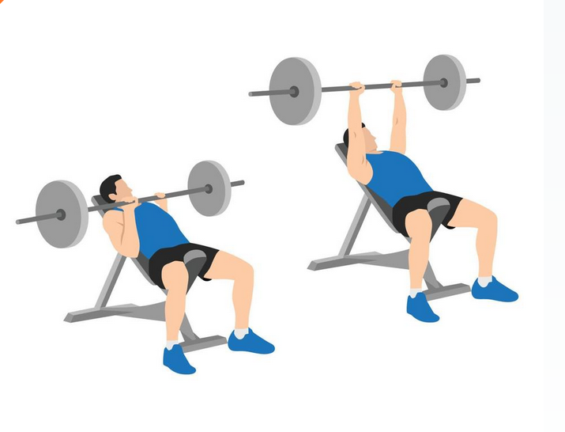
Close-Grip Bench Press
The close grip bench press primarily works the upper chest, triceps, and anterior deltoids. Compared to the standard barbell bench press, the shoulders and triceps take more of the load.
-
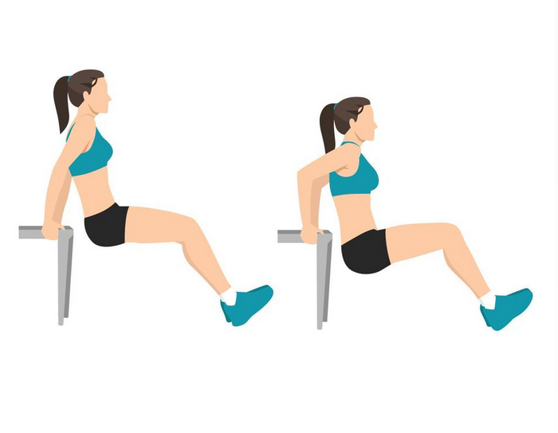
Triceps Dips
Tricep dips, also sometimes just called dips, are a popular exercise because you don't necessarily need to do them in a gym. They work several key arm and shoulder muscles in addition to your chest muscles. Additionally, it's easy to make them harder or easier with a few simple adjustments